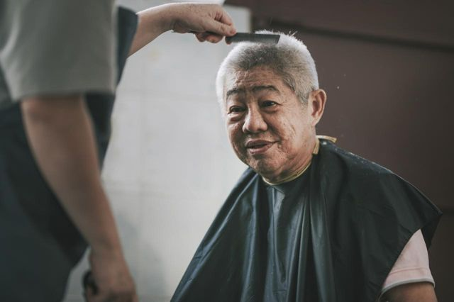
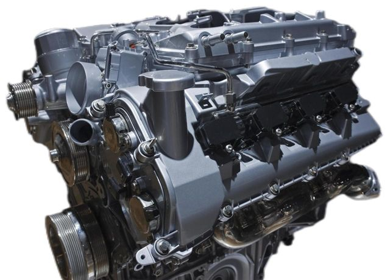
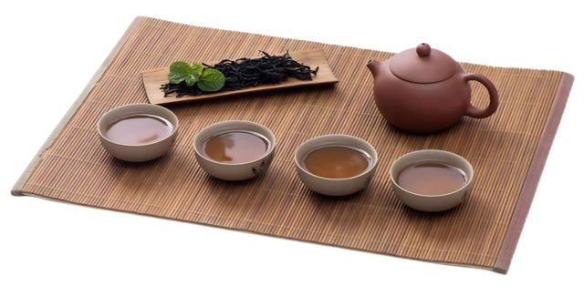
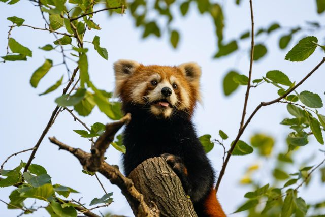

<!doctype html>
<html lang="id"><head><meta charset="utf-8">
<meta name="viewport" content="width=device-width, initial-scale=1, viewport-fit=cover">
<title>HSK 5 Mock Test</title>
<link rel="manifest" href="/manifest.webmanifest">
<meta name="theme-color" content="#0e5a63">
<link rel="icon" type="image/png" sizes="32x32" href="/icons/favicon-32.png">
<link rel="apple-touch-icon" href="/icons/apple-touch-icon.png">
<meta name="apple-mobile-web-app-capable" content="yes">
<meta name="mobile-web-app-capable" content="yes">
<meta name="apple-mobile-web-app-title" content="HSK Simulator">
<link href="https://fonts.googleapis.com/css2?family=Noto+Serif+SC:wght@400;700&family=Public+Sans:wght@400;600;700&display=swap" rel="stylesheet">
<style>
:root{--bg:#e9edf1;--paper:#fff;--ink:#17212b;--mute:#5b6773;--line:#c8d0d8;--on:#0e5a63;--onbg:#dff0f2;--red:#b42318;--ok:#1b7a3d;box-sizing:border-box;padding-top:env(safe-area-inset-top,0px);padding-bottom:env(safe-area-inset-bottom,0px)}
@media (prefers-color-scheme:dark){:root:not([data-theme="light"]){--bg:#10161c;--paper:#18212a;--ink:#e8edf1;--mute:#9aa7b3;--line:#33404c;--on:#5cc4cf;--onbg:#173238;--red:#ff8a7a;--ok:#6fd08c}}
:root[data-theme="dark"]{--bg:#10161c;--paper:#18212a;--ink:#e8edf1;--mute:#9aa7b3;--line:#33404c;--on:#5cc4cf;--onbg:#173238;--red:#ff8a7a;--ok:#6fd08c}
html{scroll-padding-top:150px}
body{margin:0;background:var(--bg);color:var(--ink);font:16px/1.6 "Public Sans",system-ui,sans-serif}
.zh{font-family:"Noto Serif SC","Songti SC","SimSun",serif}
main{max-width:820px;margin:0 auto;padding:12px 12px 60px}
.paper{background:var(--paper);border:1px solid var(--line);border-radius:6px;padding:20px 22px;margin:12px 0}
.cover{text-align:center;padding:40px 22px}
.cover h1{font-size:3rem;margin:.2em 0;letter-spacing:.08em}
.cover ol{text-align:left;max-width:540px;margin:20px auto}
.seal{display:inline-block;border:2px solid var(--red);color:var(--red);padding:2px 10px;border-radius:4px;font-weight:700}
.back{display:inline-block;margin-bottom:8px;color:var(--on)}
button{font:inherit;cursor:pointer}
.go{background:var(--on);color:var(--paper);border:0;border-radius:6px;padding:12px 28px;font-weight:700}
.go:disabled{opacity:.45;cursor:not-allowed}
.who{max-width:420px;margin:0 auto 18px;text-align:left;display:grid;gap:10px}.who label{display:grid;gap:4px;font-weight:600}.who input{font:inherit;padding:10px;border:1px solid var(--line);border-radius:6px;background:var(--paper);color:var(--ink)}
.bar{position:sticky;top:env(safe-area-inset-top,0px);z-index:5;background:var(--paper);border-bottom:2px solid var(--on);padding:8px 12px}
.bar .row{max-width:820px;margin:0 auto;display:flex;gap:12px;align-items:center;flex-wrap:wrap}
.bar .nm{flex:1;min-width:140px}.bar small{display:block;color:var(--mute)}
.tm{font:700 1.9rem/1 "Public Sans",sans-serif;font-variant-numeric:tabular-nums}.tm.low{color:var(--red)}
.fin{background:none;border:1px solid var(--line);color:var(--ink);border-radius:6px;padding:6px 12px}
.chips{max-width:820px;margin:6px auto 0;display:flex;flex-wrap:wrap;gap:4px}
.chip{min-width:30px;height:26px;border:1px solid var(--line);background:none;color:var(--mute);border-radius:4px;font-size:.8rem;padding:0}
.chip.done{background:var(--on);border-color:var(--on);color:var(--paper)}
.blk h2{margin:0 0 4px;font-size:1.15rem}.note{color:var(--mute);margin:0 0 10px}
.pass{margin:10px 0;padding:12px 16px;background:var(--bg);border-radius:6px;line-height:1.95}
.pass p{margin:0 0 .6em;text-indent:2em}.pass p:last-child{margin:0}
.pass img{float:right;width:38%;max-width:240px;margin:4px 0 8px 14px;border-radius:4px}
.pass::after{content:"";display:block;clear:both}
.bl{display:inline-block;min-width:2.4em;text-align:center;border-bottom:2px solid var(--ink);font-weight:700;font-family:"Public Sans",sans-serif;font-size:.85em;line-height:1.3}
.para{display:flex;gap:10px;margin:8px 0;padding:10px 14px;background:var(--bg);border-radius:6px}.para b{min-width:1.2em}
.q{display:flex;gap:10px;align-items:flex-start;flex-wrap:wrap;padding:10px 0;border-top:1px solid var(--line)}
.no{min-width:28px;font-variant-numeric:tabular-nums}
.t{flex:1 1 280px;font-size:1.05rem}
.opts{display:grid;grid-template-columns:repeat(auto-fit,minmax(200px,1fr));gap:6px;flex-basis:100%;padding-left:38px}
.opts.l{display:flex;flex-wrap:wrap}
.ch{border:1px solid var(--line);background:var(--paper);color:var(--ink);border-radius:6px;min-height:40px;padding:6px 12px;text-align:left}
.opts.l .ch{min-width:44px;text-align:center}
.ch b{margin-right:6px}
.ch.on{background:var(--on);border-color:var(--on);color:var(--paper)}
.wimg{display:block;max-width:100%;margin:10px auto;border-radius:4px}
textarea{width:100%;box-sizing:border-box;min-height:220px;font:1.05rem/1.8 "Noto Serif SC",serif;padding:10px;border:1px solid var(--line);border-radius:6px;background:var(--paper);color:var(--ink)}
.wc{color:var(--mute);font-size:.9rem;text-align:right}
:focus-visible{outline:3px solid var(--on);outline-offset:2px}
.sum{display:grid;grid-template-columns:repeat(auto-fit,minmax(150px,1fr));gap:10px}
.card{border:1px solid var(--line);border-radius:6px;padding:12px}.card b{font-size:1.8rem;display:block}
table{width:100%;border-collapse:collapse;font-size:.92rem}th,td{padding:5px 8px;border-bottom:1px solid var(--line);text-align:left;vertical-align:top}
.r-ok td:last-child{color:var(--ok)}.r-no td:last-child{color:var(--red)}
.tw{overflow-x:auto}.ess{white-space:pre-wrap;background:var(--bg);border-radius:6px;padding:10px 12px}.sent{font-weight:600}
</style></head><body>
<form name="hasil-hsk5" data-netlify="true" netlify-honeypot="bot-field" hidden>
<input name="bot-field"><input name="nama"><input name="kontak"><input name="mendengarkan"><input name="membaca"><input name="total_otomatis"><input name="mulai"><input name="selesai"><input name="durasi_menit"><textarea name="jawaban_1_70"></textarea><textarea name="esai_71"></textarea><textarea name="esai_72"></textarea>
</form>
<main id="app"></main>
<script src="/cert.js"></script>
<audio id="au" preload="auto" src="listening.mp3"></audio>
<script>
const KEY=('BDABCBCADCBBACDCADB'+'CACCBADDCDBDCAAB'+'BACCBDCBDA'+'CBEDACAEDB'+'ABBADACADDCCDDB').split('');
const k=n=>KEY[n-1];
const LO={
1:['旅游意外险','重大疾病险','补充养老保险','基本医疗保险'],2:['现场排队购票','自觉接受安检','进行电话预订','提前线上预约'],3:['花费更高','讲究细节','很难执行','风格多样'],4:['国内公司的待遇','留学生就业选择','如何让简历更出色','毕业生学历统计数据'],5:['墙面更平整','设施更完善','更加现代化','居民变少了'],6:['上网咨询','询问物业','检查水管','给邻居留言'],7:['味道极其苦','需要长期食用','属于销售手段','容易消化吸收'],8:['付款方式','当前物价','商品运费','交易押金'],9:['特色美食','传统节日','手工艺品','民族服装'],10:['怕小狗无聊','认为小狗可靠','把小狗当家人','想让婚礼有趣'],11:['利于表达情感','能让人发挥想象','是一种写作方法','意味着大范围删改'],12:['色彩对比弱','主题不够突出','背景比较模糊','天空所占比例大'],13:['及时调整好心态','请裁判暂停比赛','向教练请求帮助','总结失败的经验'],14:['成绩下降得很快','把李娜当作对手','目标是保持进步','根本不在乎结果'],15:['牙齿','胳膊','手指','眼睛'],16:['需每日充电','能语音控制','现在正在促销','两年内免费换新'],17:['了解不深','过于乐观','缺乏耐心','不够敏感'],18:['让孩子主动提问','单独与孩子交流','先向同学了解情况','鼓励父母优先参与'],19:['时常表扬孩子','耐心听孩子说话','多帮孩子做决定','无条件信任孩子'],
20:['路人','记者','列车长','售票员'],21:['暴雨影响','前方地震','系统出现错误','给其他车让行'],22:['收集种子','回收垃圾','感受大自然','掌握生存技能'],23:['衣服要轻薄','多采集果实','爱护当地环境','尽量独立行动'],24:['弹琴','游玩','写诗','练书法'],25:['把书藏起来','制定阅读规则','固定学习时间','让儿子大声读书'],26:['总是躲起来','很信任父亲','发起了改革','成了文学家'],27:['车超速了','是货车司机','卖的蔬菜很新鲜','被送往了医院治疗'],28:['赠送给路人','运输到垃圾站','按市场价购买','送到附近菜市场'],29:['补交罚款','领取车辆','配合事故调查','向民辅警表示感谢'],30:['缓解疼痛','放松心情','集中精力','追求刺激'],31:['摄影','运动','吸电子烟','吃无糖饼干'],32:['要下定决心','有判断能力','用好习惯代替','与优秀的人相处'],33:['情绪变化','身体数据','运动安排','饮食搭配'],34:['培养学术思维','使研究娱乐化','能发现生活的美好','提高解决问题的效率'],35:['无奈','称赞','怀疑','不在乎']};
const RQ={
36:['','不要紧','了不起','受不了','开玩笑'],37:['','递','拆','赔','派'],38:['','一旦下了班','哪儿有奖金','居然都有工资了','每个月的收入都要给我'],
39:['','却有很多错字','让人不能理解','但内容相当丰富','读起来有很大负担'],40:['','创造','反映','建设','表达'],41:['','成就','样式','业务','地位'],
42:['','也有人反对','不用担心堵车','比起其他交通工具','电动自行车快速发展'],43:['','场所','面积','地区','地面'],44:['','实用','高档','有利','广泛'],45:['','满足','实施','组合','达成'],
56:['孙凯为什么要在理发镜旁边安装音箱？','给顾客提供乐趣','提醒等候的顾客','吸引路过的行人','便于和老人沟通'],57:['根据最后一段，孙凯口中的“有爱”是指：','说话幽默','做志愿服务','充分尊重顾客','视团队成员如同亲人'],58:['未来，孙凯将会怎么做？','调低理发费用','提升理发技能','开理发培训班','增加服务项目'],
59:['根据第一段，那幅教学挂图：','画得准确形象','在校图书馆展出','由教授们集体创作','采用了 3D 打印技术'],60:['第三段主要讲的是：','内燃机的内部结构','制作手工挂图的原因','工程专业学生的课程安排','施岳定画教学挂图的原因'],61:['上文主要体现出施岳定是一个怎样的人？','热爱教育','热情活泼','善良勇敢','珍惜人才'],62:['根据上文，可以知道什么？','学校奖励了施岳定','工程画逐渐流行起来','施岳定的画在教材中出现','施岳定很在乎同事的评价'],
63:['第一段中画线部分的意思最可能是：','茶文化内容深厚','茶文化有不足之处','茶文化普及度不高','很欣赏现在的茶文化'],64:['桑国亚是如何学习茶艺的？','向名师请教','参观制茶工厂','浏览茶艺视频','接触各地茶园'],65:['桑国亚为了分享中国茶文化做了什么？','举办茶文化节','组织茶艺表演','研制茶叶新品种','担任茶文化课程老师'],66:['根据上文，下列哪项正确？','福建人习惯饭前泡茶','适当喝红茶可以提神','喝茶让桑国亚忘记烦恼','竹叶青是广州特有茶叶'],
67:['线下认养人：','每年都会捐钱','要学会训练动物','有进馆体验的机会','可以自由出入动物园'],68:['关于“云认养”模式，可以知道：','已在全国推广','限制认养数量','必须签订协议书','能通过直播观看动物'],69:['动物认养有什么意义？','增强青少年责任感','防止动物受到伤害','有效禁止违法动物买卖','让人们更加关注野生动物'],70:['下列哪项最适合做上文题目？','认养动物需谨慎','动物认养实现共赢','野生动物园的魅力','动物直播成新趋势']};
const bl=n=>`<span class="bl">${n}</span>`,P=a=>`<div class="pass zh">${a.map(x=>`<p>${x}</p>`).join('')}</div>`,R=(a,b)=>Array.from({length:b-a+1},(_,i)=>a+i);
const B=[
{sec:0,title:'第一部分',note:'第 1～19 题：请选出正确答案。',qs:R(1,19)},
{sec:0,title:'第二部分',note:'第 20～35 题：请选出正确答案。',qs:R(20,35)},
{sec:1,title:'第一部分　36～38',note:'第 36～45 题：请选出正确答案。',html:P([`四岁的文文跟妈妈去看望外公，文文骄傲地说：“外公，我在幼儿园能自己穿衣服，不需要老师帮忙了。”外公听了高兴地称赞道：“外孙女真${bl(36)}，外公必须得奖励你。”于是，他包了一个红包给文文。文文把红包${bl(37)}给了妈妈，说：“请把我的工资收好。”妈妈笑问：“你才四岁，又不上班，${bl(38)}？”文文委屈地说：“我怎么没有上班？我不是正在幼儿园上小班吗？”`]),qs:[36,37,38]},
{sec:1,title:'39～41',html:P([`《考工记》是中国到目前为止发现的年代最早的一部手工技术与工艺典籍。全书 7000 多字，篇幅并不长，${bl(39)}。该书记载了木工、金工、皮革、染色、刮磨、陶瓷等六大类三十个工种的内容，${bl(40)}了当时中国所达到的科技及工艺水平。此外，书中还总结了数学、力学、声学、地理学、建筑学等多方面的知识和经验。《考工记》在中国科技史、工艺美术史和文化史上都占有重要${bl(41)}。`]),qs:[39,40,41]},
{sec:1,title:'42～45',html:P([`近年来，中国电动自行车年销量超过三千万辆，社会现有电动自行车数量接近三亿辆，相当于几乎每个家庭都有一辆电动自行车。为什么人们对电动自行车这么“情有独钟”？`,`首先是方便。${bl(42)}，电动自行车在启动和停车时花费的时间最少。随着智能化程度的加深，电动自行车甚至不再需要使用钥匙，直接用手机开锁就行，再加上占地${bl(43)}小，车主也不再为找车位而发愁。`,`其次是用途${bl(44)}。电动自行车的使用体验好，适用于多种日常生活场景：上下班、接送孩子、外出买菜……也不用考取驾照，上了年纪的人也可以驾驶，能${bl(45)}多方面需求。`]),qs:[42,43,44,45]},
{sec:1,title:'第二部分　46～50',note:'第 46～55 题：段落排序。46 是第一段，50 是最后一段。',ord:[['A','请同学们务必在两轮选课期间办理选课、退课，超时将不能办理，如对平台操作有疑问，请联系教务处。'],['B','此计划中明确写出了毕业所需达到的学分要求，是选课的重要参考依据。'],['C','我校 2024～2025 学年第二学期第一轮选课将于 2025 年 1 月 1 日 12:00 开始，至 2025 年 1 月 8 日 12:00 结束。选课前请各位同学提前查看本专业教学计划。'],['D','1 月 8 日选课结束后，课程未达到开班人数的会停开，选修停开课程的同学及还未选课的同学，可于 1 月 10 日至 13 日参加第二轮选课。'],['E','在了解教学计划规定的要求后，同学们可以在选课期间根据自己的时间、兴趣及专业要求进入“本科教学管理与服务”平台进行选课。']],qs:R(46,50)},
{sec:1,title:'51～55',note:'51 是第一段，55 是最后一段。',ord:[['A','一天，王勃像平常一样去找这位朋友，可是一进门，却见到朋友沉默地坐在椅子上，一副难过的样子。'],['B','这首诗的第三句非常经典：海内存知己，天涯若比邻，意思是：只要是知心的朋友，即使距离再远，也感觉像在身边一样。这句诗流传千年，至今仍然被人们用来表达友情。'],['C','王勃是中国古代的著名文学家。他在长安时，交到了一位姓杜的朋友。两人关系密切，经常一起游玩、写诗。'],['D','日子过得很快，转眼朋友就要离开长安了。两人告别前，王勃回忆起和朋友相处时的种种趣事，心中十分不舍。于是，他为朋友写了一首送别诗，名为《送杜少府之任蜀州》。'],['E','王勃连忙询问朋友发生了什么事，朋友告诉他：自己被朝廷派去蜀州做官，再过几天就要出发了。蜀州偏远，他并不想去那儿，因此心情很糟糕。王勃听到这个消息，也感到非常难过。']],qs:R(51,55)},
{sec:1,title:'第三部分　56～58',note:'第 56～70 题：请选出正确答案。',html:P([`38 岁的孙凯从事理发行业已经二十年，如今在繁华的王府井地区经营着一家高端理发店。他一直热心志愿服务，常上门为行动不便的老人免费理发。`,`为了方便上门服务，他把行李箱改成了简单的“移动理发店”——里面不仅有各种理发工具和理发镜，理发镜旁边还安装了音箱。孙凯希望音乐可以给顾客带来些许乐趣。为了帮助更多老人，他组织成立了“梵珀匠人志愿服务队”，四年来，这支志愿服务队已累计为五百多位老人义务理发。`,`孙凯对自己的工作和志愿服务事业有着自己的想法。“我希望做一名‘有爱又有才’的理发师。”孙凯说，“‘爱’是指志愿服务，‘才’是指技能进步。”他说，做好服务只靠爱心是不够的，过硬的技术才是服务的基础。他打算平时再多下点儿功夫，提升技术水平，把志愿服务长久地做下去。`]),qs:[56,57,58]},
{sec:1,title:'59～62',html:P([`浙江大学工程学院院史馆内，一幅标题为“发动机剖视”的教学挂图引起了众多参观者关注。画中发动机的内部结构、材料特征等，几乎和真的一样，甚至还带着几分“动感”。`,`这幅挂图是由浙江大学工程学院教师施岳定创作的。在 20 世纪 80 年代初，施岳定就开始在教学中运用自己的挂图了。`,`施岳定在长期教学实践中发现，由于缺乏直接观察的经验，学生们常常难以理解复杂机器的工作原理、结构间的安装关系。“比如每次讲到汽车、内燃机等复杂结构的时候，我们没法儿把汽车开进教室，又不能拆开设备，给学生看里面的详细结构。”而国内当时教材中的教学挂图又不能清楚明确地表现复杂机器的结构，于是施岳定产生了一个想法——把这些复杂机器结构用立体画的方式展示出来。`,`那幅《发动机剖视》图，施岳定画了整整三个月。凭借对教育事业的热爱，他白天上课、搞科研，晚上集中精力画图。施岳定陆续画了百余幅这样的课堂挂图，其中许多图片成为了教材插图，帮助了许多学生。正因如此，他被称为中国教育界的“工程画第一人”。`]),qs:[59,60,61,62]},
{sec:1,title:'63～66',html:P([`1991 年，桑国亚只身一人来到中国留学。随着在中国的时间越来越长，桑国亚对茶的兴趣越来越浓，认识也越来越深刻。他说，<u>中国的茶文化总让他感觉“学而知不足”</u>。`,`为了进一步增进了解，桑国亚开始正式学习茶艺，他走遍了中国各地茶园，“在福建，每天晚饭后在家中泡上一壶铁观音，成为当地家庭生活的一部分；在广州，茶楼里的茶艺师傅摆弄着各式各样的茶具，表演着精彩的工夫茶；在成都，朋友邀请我去茶馆品尝竹叶青，让我第一次看到茶叶直直地立在水中。”桑国亚说，这些经历不仅让他收获了与茶相关的知识，还认识了很多热情好客的中国朋友。`,`如今，对茶的热爱让桑国亚开始向更多的人分享中国茶文化。他回国后在学校里教茶文化课，在他的课堂上，有人对茶的种类、饮茶方法等感兴趣；有人则因喝茶有益健康而渴望了解茶。`,`桑国亚发现，陷入烦恼时，泡一杯茶细细品味能让人忘记那些令人头疼的问题。“需要提神选绿茶，需要暖胃选红茶。”桑国亚希望通过自己的努力，把茶的趣味分享给更多的人。`]),qs:[63,64,65,66]},
{sec:1,title:'67～70',html:P([`红山森林动物园位于江苏省南京市，跟中国其他动物园不同，这家动物园不依靠政府，完全独立经营，所以动物园的经营状况对其生存发展至关重要。为了增加收入，红山森林动物园设有动物认养活动，支付一定的养护费用后，人们可以认领自己喜欢的动物。`,`目前有线下认养和“云认养”两种方式。线下认养早在 2001 年就已经开展，线下认养人每年可以进入场馆深度体验一次，可以帮忙打扫卫生，了解饲养员日常如何照顾动物，还可以参加“动物馆奇妙夜”等科普教育活动。随着线上认养需求的增加，2021 年动物园开通了“云认养”方式，主要针对无法到场馆实地参观的游客。线上认养人可以通过每月一次的点对点直播，观看到自己认养的小动物。这样，在给予大家精神陪伴的同时，动物园也拓宽了经济来源，可以说是双赢。`,`据工作人员介绍，目前已有一百五十只左右的动物被认养，对园区来说，这不仅改善了园区的经济状况，更重要的是加强了动物园和公众之间的联结，通过这种深度的体验方式让更多人关注、支持野生动物保护。`]),qs:[67,68,69,70]},
{sec:2,title:'第 71 题：看图写作',note:'请根据下面四张图，写一篇不少于 100 字的作文，写出发生在李明和伙伴们身上的故事。',img:'img/q71.jpg',es:71,min:100},
{sec:2,title:'第 72 题：话题作文',note:'尝试可能会成功，也可能会失败，但不去试一试就永远不会成功。请写一篇不少于 200 字的作文，分享你曾经做过的一次尝试，以及你尝试后的感受。',es:72,min:200}];
const ST=[{n:'听力 · Mendengarkan',a:1,b:35},{n:'阅读 · Membaca',a:36,b:70,min:35},{n:'写作 · Menulis',a:71,b:72,min:40}];
CERT.setup({level:5,title:'HSK 5 · 样卷',sections:[{key:'L',zh:'听力',en:'Listening',stage:0,items:()=>CERT.items(1,35)},{key:'R',zh:'阅读',en:'Reading',stage:1,items:()=>CERT.items(36,70)},{key:'W',zh:'书写',en:'Writing',stage:2,items:()=>[...CERT.items(71,71,'essay',100),...CERT.items(72,72,'essay',200)]}]});
const $=s=>document.querySelector(s),app=$('#app'),au=$('#au'),A={};
let stage=-1,end=0,timer,U={nama:'',kontak:''},T0=0;
const esc=s=>String(s).replace(/[&<>"]/g,c=>({'&':'&amp;','<':'&lt;','>':'&gt;','"':'&quot;'}[c]));
const fmt=s=>String(Math.floor(s/60)).padStart(2,'0')+':'+String(s%60).padStart(2,'0');
const zc=s=>(s.match(/[㐀-鿿]/g)||[]).length;
const btn=(n,v,l)=>`<button type="button" class="ch${A[n]==v?' on':''}" data-n="${n}" data-v="${v}"><b>${v}</b>${l?`<span class="zh">${l}</span>`:''}</button>`;
function intro(){app.innerHTML=`<a class="back" href="../">← Pilih level lain</a><section class="paper cover"><p class="zh">中文水平考试</p><h1 class="zh">HSK（五级）</h1><span class="seal zh">样卷</span>
<p>Simulasi ujian · 72 soal · sekitar 105 menit</p>
<ol><li><b>Mendengarkan</b> (soal 1–35): audio sekitar 27 menit diputar sekali dan tidak bisa dijeda, lalu 5 menit mengisi jawaban.</li><li><b>Membaca</b> (36–70): 35 menit.</li><li><b>Menulis</b> (71–72): 40 menit, dua karangan (minimal 100 dan 200 karakter).</li><li>Waktu habis, bagian berpindah otomatis. Bagian yang sudah lewat tidak bisa dibuka lagi.</li><li>Pakai headphone dan pastikan volume sudah pas sebelum mulai.</li></ol>
<div class="who"><label>Nama lengkap<input id="nm" autocomplete="name" required></label><label>WhatsApp / email (opsional)<input id="kt" autocomplete="email"></label></div>
${CERT.picker()}<button class="go" id="start" disabled>Mulai ujian</button></section>`;
const nm=$('#nm'),kt=$('#kt'),st=$('#start');nm.oninput=()=>st.disabled=!nm.value.trim();
st.onclick=()=>{U={nama:nm.value.trim(),kontak:kt.value.trim()};T0=Date.now();CERT.start();run(CERT.first())}}
function qHTML(n,ord){
if(n<=35)return `<div class="q" id="q${n}"><b class="no">${n}</b><div class="opts">${LO[n].map((o,i)=>btn(n,'ABCD'[i],o)).join('')}</div></div>`;
if(ord)return `<div class="q" id="q${n}"><b class="no">${n}</b><span class="t">Paragraf ke-${n-(n>50?50:45)}</span><div class="opts l">${'ABCDE'.split('').map(v=>btn(n,v)).join('')}</div></div>`;
const q=RQ[n];return `<div class="q" id="q${n}"><b class="no">${n}</b>${q[0]?`<span class="zh t">${q[0]}</span>`:''}<div class="opts">${q.slice(1).map((o,i)=>btn(n,'ABCD'[i],o)).join('')}</div></div>`}
function bHTML(b){let h=`<section class="paper blk"><h2 class="zh">${b.title}</h2>`;
if(b.note)h+=`<p class="note zh">${b.note}</p>`;
if(b.html)h+=b.html;
if(b.ord)h+=b.ord.map(x=>`<div class="para zh"><b>${x[0]}</b><span>${x[1]}</span></div>`).join('');
if(b.img)h+=``;
if(b.es)return h+`<textarea class="es" data-n="${b.es}" placeholder="在这里写作文…">${esc(A[b.es]||'')}</textarea><p class="wc"><span id="wc${b.es}">${zc(A[b.es]||'')}</span> / minimal ${b.min} karakter</p></section>`;
return h+b.qs.map(n=>qHTML(n,!!b.ord)).join('')+'</section>'}
function run(i){stage=i;const S=ST[i];
const dur=isFinite(au.duration)?Math.ceil(au.duration):1592;
end=Date.now()+(i==0?dur+300:S.min*60)*1000;
let c='';for(let n=S.a;n<=S.b;n++)c+=`<button class="chip${A[n]?' done':''}" id="c${n}" data-go="${n}">${n}</button>`;
app.innerHTML=`<header class="bar"><div class="row"><div class="nm"><b class="zh">${S.n}</b><small id="lab"></small></div><span class="tm" id="tm" role="timer">--:--</span><button class="fin" id="fin">Selesai bagian ini</button><button class="fin" id="pl" hidden>Putar audio</button></div><div class="chips">${c}</div></header>`+B.filter(b=>b.sec==i).map(bHTML).join('');
scrollTo(0,0);
$('#fin').onclick=function(){if(this.dataset.c)return next();this.dataset.c=1;this.textContent=(stage==0&&!au.ended)?'Audio akan berhenti. Klik lagi':'Yakin? Klik lagi';setTimeout(()=>{delete this.dataset.c;this.textContent='Selesai bagian ini'},4000)};
if(i==0){$('#pl').onclick=()=>{au.play();$('#pl').hidden=true};au.currentTime=0;au.play().catch(()=>{$('#pl').hidden=false})}
clearInterval(timer);timer=setInterval(tick,500);tick()}
function tick(){const s=Math.max(0,Math.round((end-Date.now())/1000)),t=$('#tm');if(!t)return;t.textContent=fmt(s);t.classList.toggle('low',s<300);
const lab=$('#lab');if(stage==0){lab.textContent=au.ended?'Audio selesai. Isi dan periksa jawabanmu.':'Audio sedang diputar'}else lab.textContent='Sisa waktu bagian ini';
if(s<=0)next()}
function next(){au.pause();clearInterval(timer);CERT.after(stage)!=null?run(CERT.after(stage)):result()}
app.addEventListener('click',e=>{const b=e.target.closest('.ch');if(b){const n=b.dataset.n;A[n]=A[n]==b.dataset.v?'':b.dataset.v;document.querySelectorAll(`.ch[data-n="${n}"]`).forEach(x=>x.classList.toggle('on',x.dataset.v==A[n]));mark(n);return}
const g=e.target.closest('[data-go]');if(g)$('#q'+g.dataset.go)?.scrollIntoView({behavior:'smooth',block:'start'})});
app.addEventListener('input',e=>{if(e.target.classList.contains('es')){const n=e.target.dataset.n;A[n]=e.target.value;$('#wc'+n).textContent=zc(A[n]);mark(n)}});
function mark(n){const c=$('#c'+n);if(c)c.classList.toggle('done',!!(A[n]||'').trim())}
const ok=n=>A[n]==k(n);
const cnt=(a,b)=>{let c=0;for(let n=a;n<=b;n++)if(ok(n))c++;return c};
function result(){stage=3;const c1=cnt(1,35),c2=cnt(36,70);let rows='';
for(let n=1;n<=70;n++)rows+=`<tr class="${ok(n)?'r-ok':'r-no'}"><td>${n}</td><td>${A[n]||'–'}</td><td>${k(n)}</td><td>${ok(n)?'Benar':'Salah'}</td></tr>`;
const es=n=>`<h3 class="zh">第 ${n} 题 · ${zc(A[n]||'')} karakter</h3><div class="ess zh">${esc((A[n]||'').trim()||'–')}</div>`;
app.innerHTML=`<section class="paper" id="res"><h2>Hasil ujian</h2><div class="sum" id="sum"><div class="card"><span class="zh">听力 Mendengarkan</span><b>${c1}/35</b>${Math.round(c1/35*100)}%</div><div class="card"><span class="zh">阅读 Membaca</span><b>${c2}/35</b>${Math.round(c2/35*100)}%</div><div class="card"><span class="zh">写作 Menulis</span><b>–</b>dinilai guru</div></div>
<p class="note">Persentase adalah perkiraan sederhana (jumlah benar dibagi jumlah soal), bukan konversi skor resmi HSK. Karangan 71–72 dinilai oleh guru.</p></section>
<section class="paper"><h2>Karangan</h2>${es(71)}${es(72)}</section>
<section class="paper"><h2>Lembar jawaban 1–70</h2><div class="tw"><table><thead><tr><th>No</th><th>Jawabanmu</th><th>Kunci</th><th>Hasil</th></tr></thead><tbody>${rows}</tbody></table></div><p><button class="go" onclick="location.reload()">Ulangi ujian</button></p></section>`;
scrollTo(0,0);send(c1,c2);
CERT.finish();HSKLog.render($('#res'),{level:'HSK 5',name:U.nama,items:R(1,70).filter(n=>!ok(n)).map(n=>({q:n,section:(n<=35?'Mendengarkan':'Membaca')+' · Bagian '+(n<=19?1:n<=35?2:n<=45?1:n<=55?2:3),text:n>35&&RQ[n]?RQ[n][0]:'',my:A[n],key:k(n)}))})}
function send(c1,c2){const t1=Date.now(),
d={'form-name':'hasil-hsk5',nama:U.nama,kontak:U.kontak,mendengarkan:c1+'/35',membaca:c2+'/35',total_otomatis:(c1+c2)+'/70',
mulai:new Date(T0).toLocaleString('id-ID'),selesai:new Date(t1).toLocaleString('id-ID'),durasi_menit:String(Math.round((t1-T0)/60000)),
jawaban_1_70:R(1,70).map(n=>`${n}:${A[n]||'-'}${ok(n)?'✓':'✗'}`).join(' '),esai_71:(A[71]||'').trim(),esai_72:(A[72]||'').trim()};
const m=document.createElement('p');m.className='sent';m.textContent='Mengirim hasil…';$('#sum').after(m);
fetch('/',{method:'POST',headers:{'Content-Type':'application/x-www-form-urlencoded'},body:new URLSearchParams(d).toString()})
.then(r=>{if(!r.ok)throw 0;m.textContent='✓ Hasil sudah terkirim ke guru.';m.style.color='var(--ok)'})
.catch(()=>{m.textContent='Hasil gagal terkirim. Screenshot halaman ini dan kirim ke guru.';m.style.color='var(--red)'})}
intro();
</script><script src="/log.js"></script>
<script>if('serviceWorker' in navigator)addEventListener('load',()=>navigator.serviceWorker.register('/sw.js').catch(()=>{}))</script>
</body></html>
